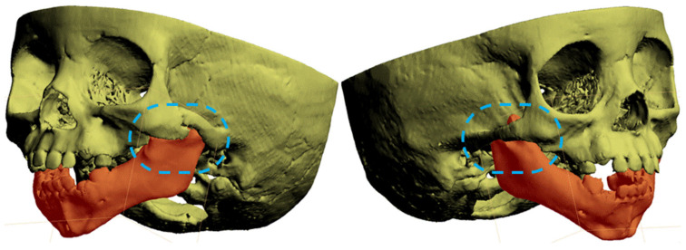
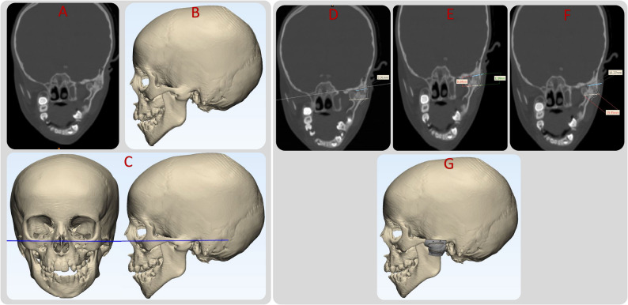
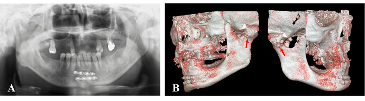
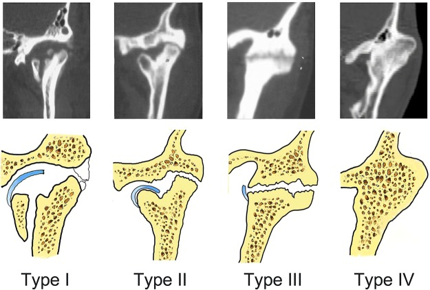

1703 — Dính khớp thái dương–hàm bẩm sinh ở trẻ: "cầu xương" trên CT, phân độ Sawhney/He, khi nào giải phóng & vì sao tái dính
Tags: pattern:han-che-mo-mieng pattern:dinh-khop pattern:cau-xuong pattern:di-hinh-mat vung:khop-thai-duong-ham vung:ham-duoi vung:so-mat anatomy:khop-thai-duong-ham protocol:CT-lat-mong protocol:CBCT protocol:duong-tho-kho score:Sawhney score:He-A1-A4
Mức chắc chắn (certainty): tổng hợp y văn (literature synthesis) — ghép ca bẩm sinh có WES + CT 3D (J Clin Med 2026, PMC12941516), 71 ca/102 khớp phân độ trên CT (Sci Rep 2019, PMC6642162), ca song phương có CBCT (Cureus 2026, PMC13480297), loạt 7 trẻ dùng guide CAD/CAM (Maxillofac Plast Reconstr Surg 2026, PMC13346373), gộp 8 nghiên cứu GA vs IA (PLoS One 2015, PMC4444315) và 29 trẻ, tái dính 37,9% (Turk J Trauma Emerg Surg 2023, PMC10198337). Không có ca do nhóm tự chụp.
Câu hỏi thực hành: bé gái 5 ngày tuổi được gọi là vi mất sản nửa mặt vì mặt hơi lệch và chỉ mở miệng 3 mm; không chấn thương, không nhiễm trùng. Hoặc bé 5 tuổi té cằm, 2 năm sau MIO 6 mm, không đau, không sưng. Câu hỏi: đây là dính khớp bẩm sinh hay mắc phải, trong khớp hay ngoài khớp, dính xơ hay dính xương — và khi nào phải mổ? Bài chốt ba quyết định: (1) trẻ mở miệng < 10 mm + không có nguyên nhân cấp = chụp CT/CBCT, không chờ "viêm khớp"; (2) cầu xương lồi cầu–ổ chảo/mỏm vẹt–gò má xác định dính xương, CT không thấy cầu xương không loại trừ dính xơ; (3) giải phóng sớm để cứu tăng trưởng hàm, nhưng trẻ tái dính cao hơn người lớn (37,9% vs 21,1%) nên phẫu thuật phải đi kèm physiotherapy và theo dõi MIO. Nối 695 – Treacher Collins & Nager, 603 – Pierre Robin, 692 – Microtia & atresia ống tai.
1. Tổng quan bệnh học – cơ chế hình ảnh: vì sao "không mở được miệng" lại là chuyện của sụn và xương
- Định nghĩa: dính khớp thái dương–hàm (temporomandibular joint ankylosis, TMJA) là hợp nhất xơ hoặc xương giữa lồi cầu xương hàm dưới với ổ chảo xương thái dương, đĩa khớp và/hoặc mỏm vẹt, làm mất chuyển động hàm. Trẻ có thể chỉ mở được ≤ 5 mm (thể nặng), không đưa hàm ra trước/sang bên; ăn, nói, vệ sinh răng và đường thở đều bị ảnh hưởng.
- Ba cách phân loại phải trả lời cùng lúc:
- Bẩm sinh (congenital) vs mắc phải (acquired): bẩm sinh rất hiếm, có mã ORPHA 210576, mô tả lần đầu bởi Burket năm 1936; mắc phải do chấn thương (84,3% trong các loạt mắc phải), nhiễm trùng, phẫu thuật khớp, viêm khớp tự miễn (JIA), bệnh hệ thống.
- Thật (true/intra-articular) vs giả (pseudo/extra-articular): thật = trong khớp lồi cầu–ổ chảo; giả = cầu xương ngoài khớp, điển hình mỏm vẹt dính gò má (zygomatic–coronoid ankylosis), hoặc xương hóa cơ do FOP.
- Xơ (fibrous) vs xương (bony) vs hỗn hợp: quyết định khả năng thấy trên CT và cách mổ.
- TẠI SAO có cầu xương: sau chấn thương/nhiễm trùng, máu tụ trong khớp + màng xương bị bóc → canxi hóa và tạo xương non lấp khoang khớp; lực nhai tiếp tục kích thích tạo xương nên cầu xương dày dần theo thời gian. Trên CT, xương non có đậm độ > 200 HU, bờ cortical liên tục với lồi cầu và ổ chảo — đó là lý do CT là chìa khóa phân biệt xơ/xương, còn X-quang panorama chỉ thấy mất khoảng khớp.
- TẠI SAO dính xơ có thể "CT bình thường": tổ chức xơ 30–60 HU, không có bờ cortical, không cản quang; trên CT chỉ thấy khoảng khớp hẹp hoặc mờ, dễ đọc là bình thường. Khi nghi dính xơ, MRI T2/PDFS thấy dải xơ giảm tín hiệu + đĩa khớp di lệch; không được loại trừ chỉ vì CT không có cầu xương.
- TẠI SAO trẻ khác người lớn: lồi cầu là trung tâm tăng trưởng của hàm dưới. Dính khớp trước tuổi trưởng thành → hàm dưới ngắn, lùi, lệch, cắn hở/cắn ngược, OSAS. Trong loạt 71 ca, MIO trung bình giảm theo độ: type I 14,9 ± 8,2 mm, II 11,6 ± 6,6 mm, III 7,4 ± 4,9 mm, IV 1,9 ± 2,9 mm; lùi hàm 0% → 9% → 32% → 86%, OSAS 0% → 0% → 4% → 29%. MIO tương quan nghịch với độ nặng (r = −0,644); tuổi bị chấn thương càng nhỏ → càng nặng (r = −0,489); thời gian trì hoãn càng dài → càng nặng (r = 0,733).
- Ca bẩm sinh điển hình: bé gái sinh đủ 40 tuần, 3.470 g, MIO 3 mm lúc 5 ngày, ban đầu chẩn đoán vi mất sản nửa mặt; CT lúc 5 tháng phát hiện dính mỏm vẹt–gò má trái (ngoài khớp); giải phóng lúc 2 tuổi rồi tái dính, mổ lại lúc 3 tuổi (đặt nội khí quản ống mềm rất khó), kéo giãn xương lúc 7 tuổi, thay khớp hai bên lúc 8 tuổi; cuối cùng MIO 3 → 30 mm nhờ phẫu thuật + physiotherapy liên tục. WES phát hiện 3 biến thể bệnh lý ở TCOF1, POLR1B (Treacher Collins) và DHODH (Miller) dù trẻ không có kiểu hình syndrome — gợi ý dính khớp bẩm sinh có thể là phần phổ của dị tật cung hầu I–II.
- Dịch tễ – chân dung: dính khớp một bên/hai bên ≈ 1,5:1, nam hơi nhiều hơn nữ; thể mắc phải hay gặp ở trẻ < 10 tuổi (lồi cầu đang tăng trưởng). Bẩm sinh không có tần suất quần thể đáng tin cậy — y văn chỉ có ca lẻ và loạt nhỏ.
2. Mẫu hình + chẩn đoán phân biệt theo thời điểm và vị trí (Gamut)
- Ba câu hỏi định khu (dùng trước khi nhìn chẩn đoán):
- Từ lúc sinh hay sau chấn thương/nhiễm trùng? → bẩm sinh/syndrome vs mắc phải.
- Trong khớp hay ngoài khớp? → lồi cầu–ổ chảo vs mỏm vẹt–gò má, FOP, xương hóa cơ.
- Xơ hay xương? → CT có cầu xương không; nếu không, MRI.
- Gamut theo tuổi khởi phát:
- Sơ sinh – 6 tháng: dính khớp bẩm sinh (thật hoặc mỏm vẹt–gò má), syngnathia, Treacher Collins/Nager/Miller, Pierre Robin, OAVS/Goldenhar, bất sản lồi cầu.
- 1–10 tuổi: di chứng gãy lồi cầu bị bỏ sót, nhiễm trùng tai–xương chũm lan khớp, JIA, sau phẫu thuật khớp.
- > 10 tuổi: chấn thương, viêm khớp dạng thấp/ankylosing spondylitis, vôi hóa dây chằng, FOP.
- Gamut theo vị trí:
- Trong khớp: cầu xương lồi cầu–ổ chảo (Sawhney II–IV), dính xơ (Sawhney I), gãy lồi cầu cũ di lệch.
- Ngoài khớp: mỏm vẹt–gò má (bẩm sinh hoặc sau chấn thương), tăng sản mỏm vẹt, xương hóa cơ cắn/nhai, FOP (đa ổ, tiến triển).
- Hỗn hợp: cầu xương trong khớp + dải xơ ngoài khớp — thường gặp sau mổ/mô sẹo.
- Gamut theo hình ảnh:
- Cầu xương dày, bờ cortical liên tục → dính xương.
- Khoảng khớp hẹp, không cầu xương, đĩa khớp di lệch → dính xơ (cần MRI).
- Cầu xương từ mỏm vẹt ra gò má, khớp còn khoảng trống → giả dính khớp ngoài khớp.
- Xương hóa cơ lan tỏa, nhiều ổ, ngón cái ngắn → FOP.
- Mnemonic "3T" để không bỏ sót: Trauma (gãy lồi cầu cũ), Tissue (xơ vs xương), True vs pseudo (trong hay ngoài khớp).
3. Bảng so sánh phân biệt (ma trận đối chiếu)
| Thực thể (entity) | Hình ảnh điển hình | Chốt vào (rule-in) | Chốt loại (rule-out) | Gợi ý xác nhận |
|---|---|---|---|---|
| Dính khớp bẩm sinh mỏm vẹt–gò má (pseudoankylosis) | Cầu xương từ mỏm vẹt lên gò má, khoảng khớp lồi cầu–ổ chảo còn; 3D VR thấy rõ dải xương | MIO rất nhỏ (3 mm trong ca bệnh) từ lúc sinh, không chấn thương, không nhiễm trùng | Có gãy lồi cầu cũ/di lệch → nghĩ mắc phải | CT ≤ 1 mm + 3D VR; đối chiếu syndrome (TCS/Nager/Miller) |
| Dính khớp xương trong khớp do chấn thương | Cầu xương lồi cầu–ổ chảo, mất khoảng khớp, lồi cầu di lệch ra trước/trong | Tiền sử té cằm + MIO giảm dần + cầu xương trên CT | Khoảng khớp còn, không cầu xương → dính xơ | CT coronal/3D; đo chiều dày cầu xương, độ lan vào mỏm vẹt |
| Dính xơ (Sawhney I, He A1) | Khoảng khớp hẹp/mờ, không cầu xương; đĩa khớp di lệch, tín hiệu xơ trên T2 | MIO hạn chế + CT không cầu xương + MRI có dải xơ | Cầu xương rõ → dính xương | MRI T2/PDFS; đánh giá lại sau 3–6 tháng nếu nghi tiến triển |
| Tăng sản mỏm vẹt / pseudoankylosis | Mỏm vẹt dài, cong, chạm gò má; khớp bình thường | MIO hạn chế nhưng khớp không dính, mỏm vẹt chạm gò má | Cầu xương trong khớp, mất khoảng khớp → dính thật | CT 3D + đo khoảng mỏm vẹt–gò má |
| FOP (fibrodysplasia ossificans progressiva) | Xương hóa cơ đa ổ, dải xương ngoài khớp, ngón cái ngắn; tiến triển sau chấn thương nhẹ | Trẻ có ngón cái ngắn + xương hóa mô mềm tái phát + MIO giảm | Một ổ cầu xương đơn độc, không xương hóa cơ → không FOP | Không sinh thiết/mổ; chẩn đoán lâm sàng + gen ACVR1 |
| JIA/viêm khớp tự miễn | Hẹp khớp đối xứng hai bên, bào mòn lồi cầu, không cầu xương dày | Đau + sưng + cứng buổi sáng + hẹp khớp hai bên | Cầu xương một bên sau chấn thương → không JIA | MRI có phù tủy/xơ; RF/ANA; theo dõi tăng trưởng |
| Trismus do nhiễm trùng cơ nhai/áp-xe | Phù cơ cắn/nhai, ổ dịch, xương bình thường; há miệng đau | Sốt + sưng má + đau khi há + khởi phát ngày | Không sốt, không đau, MIO cố định nhiều năm → dính khớp | CT/MRI có cản quang; CRP; dẫn lưu |

Ca bẩm sinh (J Clin Med 2026, PMC12941516): mô hình 3D hộp sọ — dải xương nối mỏm vẹt với gò má trái (khoanh xanh), hàm dưới in đỏ; bên phải chỉ biến đổi nhẹ. Đây là dính khớp NGOÀI khớp (pseudoankylosis), không phải cầu xương lồi cầu–ổ chảo. Nguồn: CC BY 4.0, nguyên bản.4. Protocol chụp + phân độ + chỉ định mổ
- Bước 0 — đường thở trước hình ảnh: trẻ MIO 1–3 mm không thể đặt đèn thanh quản thông thường. Ca 11 tuổi dính khớp hai bên được đặt nội khí quản qua mũi có Glidescope + guide ống ăn vì không có ống mềm nhi; ca bẩm sinh mổ lần 2 phải soi ống mềm. Luôn có kế hoạch B: mở khí quản cấp cứu (không cricothyroidotomy ở nhũ nhi) và dao mở đường thở; không an thần sâu trước khi kiểm soát đường thở.
- Bước 1 — đo và ghi bằng số: MIO (mm) bằng thước kẹp; đưa hàm ra trước và sang bên (mm); đo khoảng cách cằm–cổ, Mallampati, độ mở miệng; chụp ảnh mặt thẳng/nghiêng để theo dõi bất đối xứng.
- Bước 2 — CT/CBCT là chuẩn:
- CT đa lát ≤ 1 mm, cửa sổ xương, tái tạo coronal + sagittal + 3D VR; coronal là mặt phẳng bắt buộc để phân độ He (A2 vs A3 phụ thuộc kích thước mảnh lồi cầu còn lại so với 0,5 đầu lồi cầu).
- CBCT liều thấp hơn, đủ cho trẻ hợp tác; không dùng khi cần mô mềm/khối u.
- Đo: chiều dày cầu xương (mm), độ lan lên mỏm vẹt/xuống bờ sau hàm, chiều cao cành lên hai bên, khoảng mỏm vẹt–gò má, góc lệch cằm.
- Bước 3 — MRI khi CT không giải thích được: nghi dính xơ, JIA, áp-xe, hoặc cần đánh giá đĩa khớp. Chuỗi: T1, T2/PDFS, T1 sau tiêm ± fat-sat; không cần thuốc cản quang nếu chỉ tìm cầu xương.
- Bước 4 — phân độ (bảng dưới) và chọn mổ:
| Hệ phân độ | Định nghĩa then chốt | Ý nghĩa điều trị |
|---|---|---|
| Sawhney 1986 (70 ca) | I: lồi cầu biến dạng nhưng còn thấy, không cử động do dính xơ; II: xương hợp nhất chủ yếu ở bờ trước/sau, phần trong lồi cầu còn nguyên; III: lan tới cành lên + gò má, mảnh lồi cầu teo di lệch; IV: xóa hoàn toàn khớp bằng khối xương từ nền sọ đến cành lên | I–II: giải phóng + interposition; III: cần vào rộng, cân nhắc mảnh ghép; IV: giải phóng khối lớn ± tái tạo |
| He 2011 (84 ca/124 khớp, CT coronal) | A1: dính xơ, không cầu xương; A2: cầu xương bên, mảnh lồi cầu còn > 0,5 đầu lồi cầu; A3: như A2 nhưng mảnh còn < 0,5; A4: cầu xương hoàn toàn | A2–A3 quyết định có giữ được lồi cầu hay phải tái tạo; A4 thường cần gap rộng/interposition |
| Xia 2019 (71 ca/102 khớp) | I: không xương, khoảng khớp gần bình thường; II: cầu xương bên, còn dải sáng trong khớp; III: cầu xương toàn bộ, chỉ còn dải sáng; IV: cầu xương lan rộng, mất dải sáng | Dải sáng = còn khả năng tách khớp; mất dải sáng = khối liền, cần cắt rộng hơn |
- Bước 5 — kỹ thuật mổ (theo bằng chứng):
- Gap arthroplasty (GA) vs interpositional arthroplasty (IA): gộp 8 nghiên cứu/272 bệnh nhân, tái dính 13/120 (IA) vs 29/163 (GA), RR 0,67 (95% CI 0,38–1,16) — không khác có ý nghĩa; MIO cải thiện thêm 1,96 mm (0,21–3,72) ở IA. Kết luận thực dụng: IA ít tái dính hơn về xu hướng, nhưng yếu tố quyết định là cắt đủ rộng và physiotherapy.
- Khoảng cắt: GA cổ điển cần ~10 mm, IA ~5 mm; cắt quá rộng → ngắn cành lên, cắn hở; cắt không hết phía trong → tái dính. Ca song phương 2026: bên phải 10 mm (đường ngoài miệng + vạt cơ thái dương), bên trái 8 mm (đường trong miệng + vạt mỡ má) vì ưu tiên giảm biến chứng; MIO 6 → 43 mm, giữ 38 mm sau 3,5 năm.
- Vật liệu chen: vạt cơ–cân thái dương (phổ biến, gần), mỡ–bì, sụn sườn, vạt mỡ má; tổng quan Chossegros: da toàn bộ 92% tốt, cơ thái dương 83%, sụn đồng loài kém.
- Trẻ: giải phóng sớm để cho hàm dưới tăng trưởng, nhưng tái dính 37,9% (11/29 trẻ) so với 21,1% (8/38 người lớn) — phải physiotherapy từ ngày 3, kéo dài ≥ 1 năm; ca 7 tuổi đạt 35 mm lúc 2 tuần và giữ 6 tháng.
- Tái phát nhiều lần: cân nhắc kéo giãn xương (ca bẩm sinh lúc 7 tuổi) và thay khớp toàn bộ (TJR) ở trẻ lớn/đã cốt hóa; TJR ở trẻ còn tăng trưởng cần theo dõi thay thế.
- Hướng dẫn CAD/CAM: loạt 7 trẻ, khe cắt 5 mm, MIO trước mổ 9,41 ± 4,73 mm → trong mổ 38,56 ± 1,91 mm, không tái dính; sai lệch góc 2,36°/1,90°, chiều cao cành lên 1,57/0,95 mm; 1 ca liệt nhánh VII tạm thời (HB III).

Loạt 7 trẻ (Maxillofac Plast Reconstr Surg 2026, PMC13346373): (A) CT coronal — khối dính khớp trái; (B) phân đoạn và mô hình 3D; (C) tái định hướng theo mặt phẳng Frankfort; (D–F) kiểm tra hai mặt cắt sọ–lồi cầu và đo độ sâu; (G) guide cắt xương với khe 5 mm và 4 lỗ vít. Khe hẹp giúp cắt chính xác, tránh lấy quá cành lên. Nguồn: CC BY 4.0, nguyên bản.flowchart TD
A[Trẻ hạn chế mở miệng: MIO < 10 mm] --> B{Chấn thương/nhiễm trùng/sau mổ?}
B -->|Có| C[CT ≤ 1 mm: cầu xương trong khớp?]
B -->|Không, từ lúc sinh| D[CT/CBCT + 3D: tìm cầu xương mỏm vẹt–gò má]
C -->|Có| E[Phân độ Sawhney/He trên coronal]
C -->|Không| F[MRI T2/PDFS: dính xơ, đĩa, JIA]
D -->|Có| G[Pseudoankylosis: giải phóng mỏm vẹt/gò má]
D -->|Không| F
E --> H{MIO và tăng trưởng}
F --> H
G --> H
H -->|Còn tăng trưởng, dính nặng| I[Giải phóng sớm + interposition + physiotherapy]
H -->|Đã cốt hóa/tái phát| J[TJR hoặc kéo giãn xương]
I --> K[Theo dõi MIO 2 tuần, 6 tháng, mỗi năm]
J --> K
K --> L{MIO giảm > 5 mm?}
L -->|Có| M[CT lại: tái dính → mổ lại/physiotherapy tăng]
L -->|Không| N[Tiếp tục theo dõi tới hết tăng trưởng]
- Theo dõi sau mổ: MIO + đưa hàm ra trước/sang bên lúc 2 tuần, 6 tuần, 3 tháng, 6 tháng, sau đó mỗi 6–12 tháng tới hết tăng trưởng; giảm > 5 mm hoặc lệch cằm tăng → CT lại. Không dùng X-quang thường quy để theo dõi tái dính — phim khó thấy cầu xương sớm.
5. Biến thể bình thường và cạm bẫy
- Bẫy 1 — gọi là "vi mất sản nửa mặt": ca bẩm sinh bị chẩn đoán hemifacial microsomia lúc 5 ngày vì mặt lệch + MIO 3 mm; chỉ CT lúc 5 tháng mới thấy cầu xương mỏm vẹt–gò má. MIO không giải thích được bằng bất đối xứng mặt → phải chụp.
- Bẫy 2 — "CT không có cầu xương = không dính khớp": dính xơ (Sawhney I/He A1) không có cầu xương; nếu bỏ qua, trẻ bị bỏ sót và hàm dưới vẫn ngừng tăng trưởng. MRI T2/PDFS là bước tiếp theo.
- Bẫy 3 — chỉ nhìn khớp, bỏ mỏm vẹt: dính mỏm vẹt–gò má là ngoài khớp; mổ vào khớp sẽ không giải phóng được. Luôn dựng 3D VR và đo khoảng mỏm vẹt–gò má.
- Bẫy 4 — FOP: xương hóa cơ đa ổ + ngón cái ngắn; mổ/sinh thiết gây bùng phát, là chống chỉ định tuyệt đối. Đừng "thử giải phóng" để xem.
- Bẫy 5 — đường thở: MIO 1–3 mm + dính hai bên = đường thở khó cực độ; đặt nội khí quản mù hoặc gây mê sâu trước khi kiểm soát đường thở có thể tử vong. Chuẩn bị ống mềm nhi/Glidescope, guide, mở khí quản.
- Bẫy 6 — cắt quá tay: cắt > 10–15 mm hoặc lấy quá nhiều cành lên → ngắn hàm, cắn hở, lệch cằm; cắt thiếu phía trong → tái dính. Đo trên CT trước, dùng guide nếu có.
- Bẫy 7 — chờ "hết tăng trưởng" mới mổ: trì hoãn làm biến dạng mặt cố định và OSAS; nhưng mổ quá sớm ở trẻ cũng tái dính cao — quyết định theo độ nặng + tăng trưởng + khả năng physiotherapy, không theo tuổi đơn thuần.
- Bẫy 8 — coi khớp "bình thường" trên panorama: panorama bỏ sót dải sáng trong khớp và cầu xương mảnh; CT/CBCT coronal mới đủ.
6. Tự lượng giá — Blind Quiz
Ca 1 — Bé gái 5 ngày tuổi, mặt hơi lệch, chỉ mở miệng 3 mm, không chấn thương.
- Câu hỏi: Tổn thương nằm trong hay ngoài khớp? Vì sao không được gọi ngay là "vi mất sản nửa mặt"? Bước tiếp theo?
Bấm để hiện đáp án (findings + chẩn đoán)
- Dấu hiệu (findings): dải xương nối mỏm vẹt trái với gò má (khoanh xanh), khoảng khớp lồi cầu–ổ chảo còn; hàm dưới in đỏ, bên phải biến đổi nhẹ.
- Chẩn đoán (diagnosis): dính khớp bẩm sinh mỏm vẹt–gò má (zygomatic–coronoid ankylosis, pseudoankylosis) — ngoài khớp, không phải cầu xương lồi cầu–ổ chảo.
- Vì sao: MIO 3 mm từ lúc sinh không thể giải thích chỉ bằng bất đối xứng mô mềm; cần CT/CBCT + 3D VR. Ca này WES có TCOF1/POLR1B/DHODH, gợi ý phổ dị tật cung hầu I–II.
- Nguồn ảnh: J Clin Med 2026 (PMC12941516), CC BY 4.0.
Ca 2 — Bệnh nhân sau chấn thương hàm, nay mở miệng 6 mm, không đau.

- Câu hỏi: Mô tả bất thường trên panorama (A) và CBCT 3D (B). Đây là dính xơ hay xương? Cần đo gì trước mổ?
Bấm để hiện đáp án
- Dấu hiệu (findings): (A) mất khoảng khớp, lồi cầu dính vào ổ chảo; (B) hai lồi cầu biến dạng, di lệch ra trong, cầu xương lan rộng (mũi tên đỏ), không thấy khe khớp.
- Chẩn đoán (diagnosis): dính khớp xương hai bên sau chấn thương (ảnh minh họa từ một ca người lớn; ở trẻ cơ chế và mẫu hình tương tự nhưng biến dạng tăng trưởng nhanh hơn — đây là suy luận, không phải ca trẻ).
- Cần đo: chiều dày cầu xương, độ lan vào mỏm vẹt, chiều cao cành lên hai bên, khoảng mỏm vẹt–gò má; phân độ Sawhney/He trên coronal; đánh giá đường thở trước mổ.
- Nguồn ảnh: Cureus 2026 (PMC13480297), CC BY 4.0.
Ca 3 — Bốn kiểu dính khớp trên CT: nhìn hình, gọi tên và chọn hướng mổ.

- Câu hỏi: Type I khác type IV ở đâu? Type nào còn khả năng "tách" khớp? Type IV thường kèm biến dạng gì?
Bấm để hiện đáp án
- Dấu hiệu (findings): Type I — không cầu xương, khoảng khớp gần bình thường, có callus rải rác (dính xơ/không xương); Type II — cầu xương bên, còn dải sáng trong khớp; Type III — cầu xương toàn bộ, chỉ còn dải sáng; Type IV — cầu xương lan rộng, mất dải sáng, không nhận ra lồi cầu/ổ chảo.
- Chẩn đoán (diagnosis): phân độ Xia 2019 (71 ca): type IV có MIO 1,9 ± 2,9 mm, lùi hàm 86%, OSAS 29%; tương quan r = −0,644 giữa độ và MIO.
- Điều trị: type I–II có thể giải phóng + interposition; type III–IV cần cắt rộng, cân nhắc ghép/tái tạo; type IV kèm biến dạng mặt nặng → kế hoạch kéo giãn/TJR sau khi giải phóng.
- Nguồn ảnh: Sci Rep 2019 (PMC6642162), CC BY 4.0.
Bài liên quan chéo
- 600 – Tổng quan Hệ Nhi khoa
- 695 – Hội chứng Treacher Collins & Nager
- 603 – Pierre Robin & tắc nghẽn đường thở trên
- 692 – Microtia & atresia ống tai
- 300 – Tổng quan Hệ Cơ – Xương – Khớp
- 612 – Cấp cứu đường thở trên trẻ em
Ảnh
- 4 ảnh, tất cả CC BY 4.0 (J Clin Med 2026: 1; Sci Rep 2019: 1; Cureus 2026: 1; Maxillofac Plast Reconstr Surg 2026: 1) — nguyên bản, không crop/ghép; chi tiết trong
images/CREDITS.md. - Không tạo composite vì 4 bài gốc là 4 bệnh cảnh khác nhau (bẩm sinh, phân độ, song phương người lớn, lập kế hoạch ảo).
Không dùng để chẩn đoán độc lập khi chưa có người hướng dẫn.